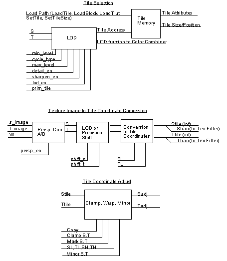
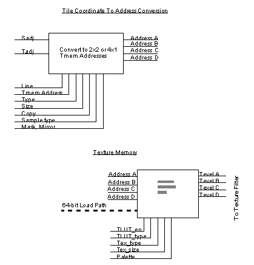

|
|
Texture Pipeline
Figure 13.6.1 Texture Pipeline
Figure 13.6.2 Texture Pipeline (continued)


Copyright © 1999
Nintendo of America Inc. All Rights Reserved
Nintendo and N64 are registered trademarks of Nintendo
Last Updated January, 1999